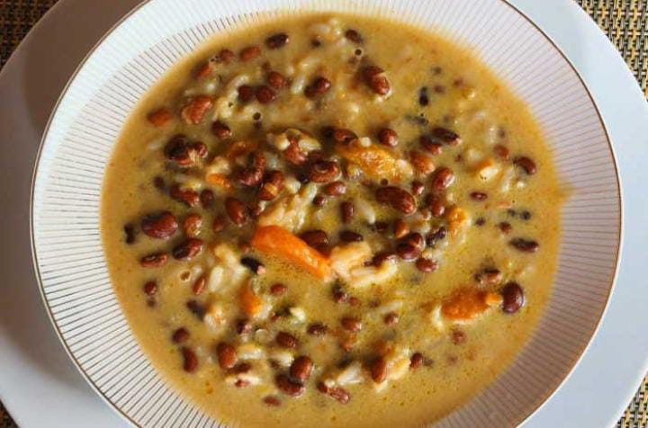

Caldo de Poroto

Esta receta es muy tradicional en la gastronomía guaraní, es una deliciosa sopa hecha a base de porotos con queso, cuya combinación de sabores resultan en un plato con alto nivel proteico
Ingredientes
- ½ kilogramo de Porotos
- 1 Cebolla
- 2 Tomates
- 1 Locote verde
- 3 Dientes de ajo
- 200 gramos de Queso paraguay
- 1 Manojo de perejil
- 1 Manojo de cebollas de verdeo
- 500 mililitros de Agua
- Aceite para freír
- 1 pizca de Sal
- 1 pizca de Pimienta